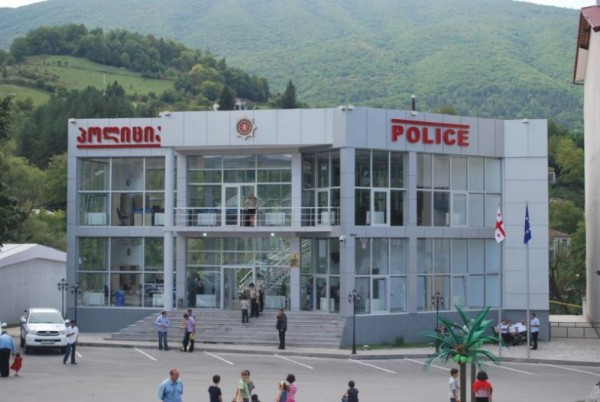
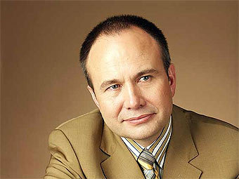

Офисные помещения открытого типа планировки стали распространяться в России после очередного появления в начале 90-х годов настоящего частного бизнеса. Частный бизнес требовал прибыли, а не имитации деятельности. Офис без стен давал контроль, синергию и конечно экономию офисных площадей.
В переехавшей в середине 90-х с Тухачевского, 40 в здание управления Рыбзавода кемеровской «Коре» были этажи полностью без перегородок. Целые этажи столов и людей.
То что оказалось логичным для бизнеса, который в основном всё-таки работает на результат, для чиновников удобным не показалось. Для перекладывания бумажек синергия не нужна. А стремления экономить площади у администраций разных уровней вовсе никогда не было. Чиновники продолжили сидеть в кабинетах.
Примером стремления показать, что здесь занимаются работой, а не раскладыванием пасьянсов на постоветском пространстве стала разве что грузинская полиции с их стеклянными, полностью открытыми полицейскими участками. Но коридоры российских администраций по-прежнему напоминают не то коридоры поликлиники, не то коридоры студенческих общежитий. Про отделения милиции вообще промолчу. Там всё-так секретно.

Пермский край (в основном конечно сама Пермь) стала известна блогерам благодаря дизайнеру Артемию Лебедеву, придумавшему впервые в истории России логотип для целого города. Кроме нового логотипа в Перми появился еще и целый Пермский центр развития дизайна, который призван формировать у пермяков культуру и эстетику окружающей среды, отношение к самой среде, к труду, к окружающим. Центр создан при поддержке губернатора края Олега Чиркунова.
Еще одной поводом, позволяющим судить о том, что в руководстве края стоят неравнодушные, современные люди (ну один человек это точно) стали события конца этой недели. Олег Чиркунов, губернатор Пермского края принял довольно неожиданное для жителей края, а в основном для работников краевой администрации решение.
Как сообщает газета «Взгляд» со ссылкой на галериста Марата Гельмана, Чиркунов распорядился убрать в здании краевой администрации двери в кабинеты чиновников. По мнению губернатора двери мешают чиновникам выполнять свои функции.

Кроме этого будут ликвидированы шкафы для бумаг (нечего будет перекладывать) и одежды и персональные принтеры.
Очень надеюсь, что идея губернатора не останется в Перми. От отсутствия дверей в кабинетах сплошная польза. Как для народа так и для самих чиновников. Любой сможет пройтись по коридору и убедиться, что работают они и правда столько сколько говорят.
Ссылки по теме